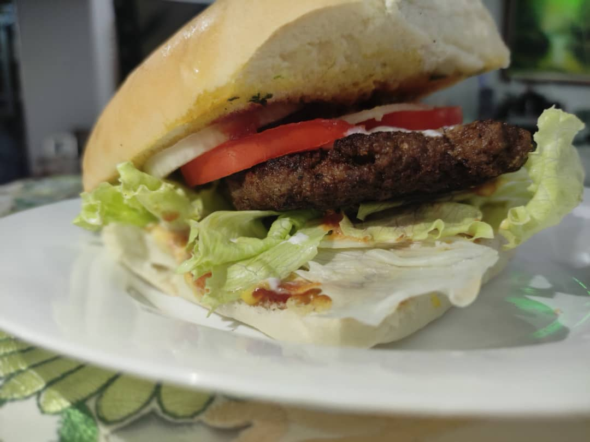
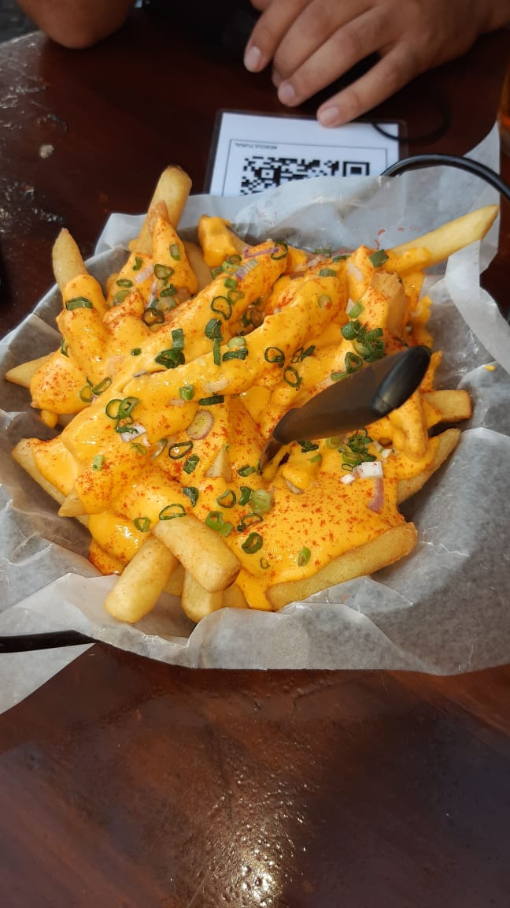
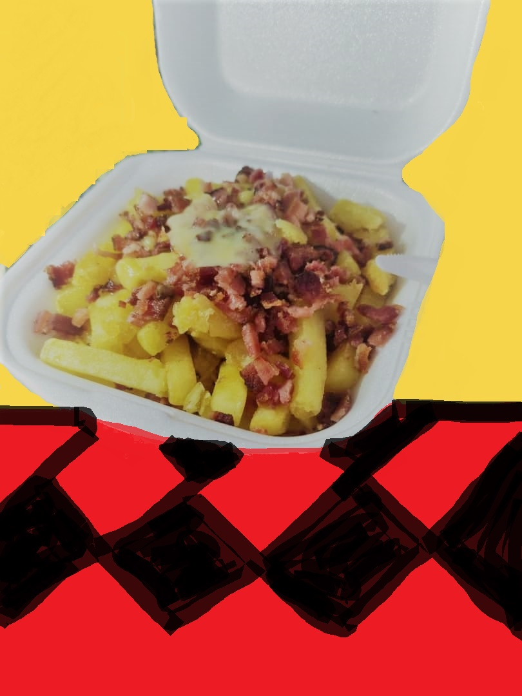
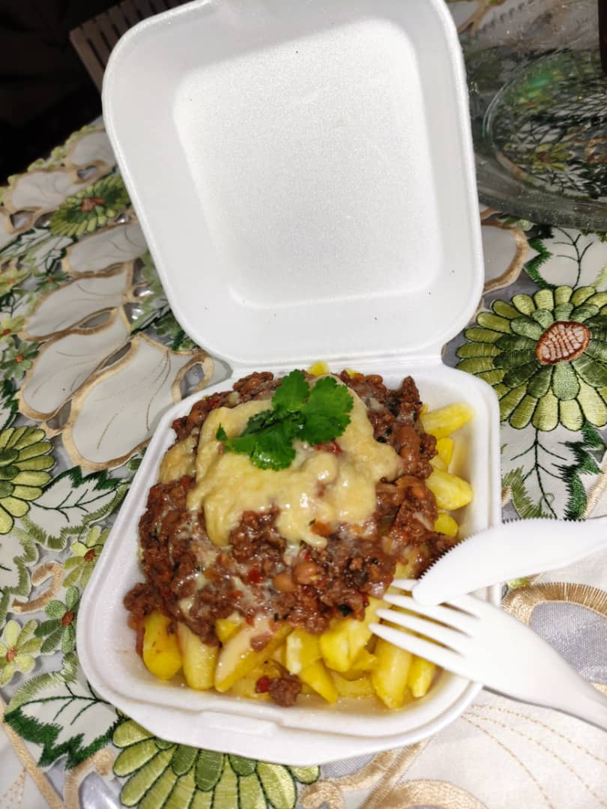

Home
Cursos
Instructores
Blog
Menu La Guaira Papa´s
Burgers

* The Dollar Burger (carne, lechuga, tomate, cebolla)
* Burger&Fries (carne, queso fundido, lechuga, tomate, cebolla)
Fries

(Queso fundido y Cebollin)

* Bacon&Cheese (Queso fundido y Tocineta)

* Chili (combinación de carne molida con frijoles pintos)